Research
I have a keen interest in several areas, including distributed machine learning, computer vision, deep learning, diffusion models, their intersection with LLMs and Agentic AI, and their practical applications in Digital Healthcare and Communication Technologies.
|
News!
-
[Feb 2025] Accepted paper at Pattern Recognition Elsevier.
-
Currently working on a new submission to ICCV25 on Graph Distillation.
-
[May 2024] Submitted one paper to AAAI 25.
-
[Apr 2024] One paper accepted to ECCV 24-DD.
-
[Mar 2024] One paper accepted to ICASSP 24.
-
[Jan 2024] Submitted one paper to Pattern Recognition.
|
|
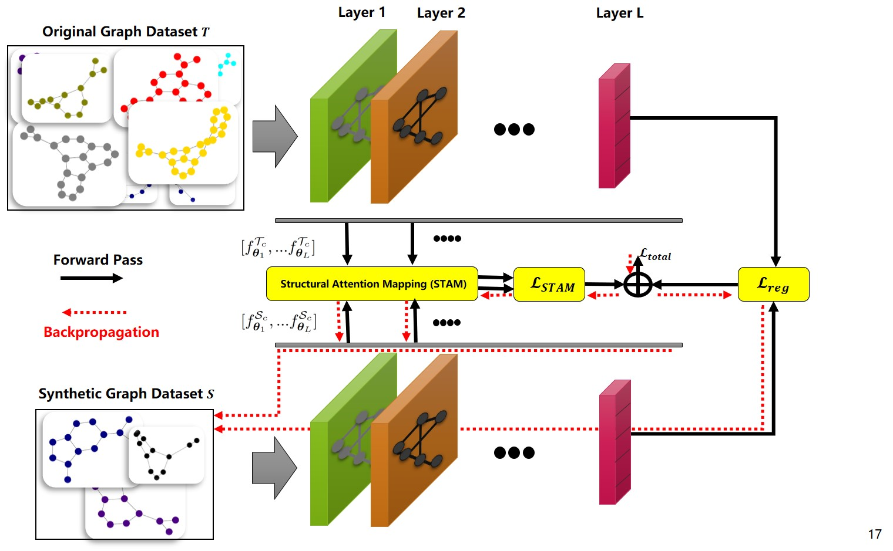
|
GSTAM: Efficient Graph Distillation with Structural Attention-Matching
Arash Rasti-Meymandi, Ahmad Sajedi,Zhaopan Xu, Konstantinos N Plataniotis
ECCV 24-DD 2024
Paper | Code | Webpage
It is a novel approach that uses attention maps from GNNs to distill structural information from the original dataset into synthetic graphs.
|
|
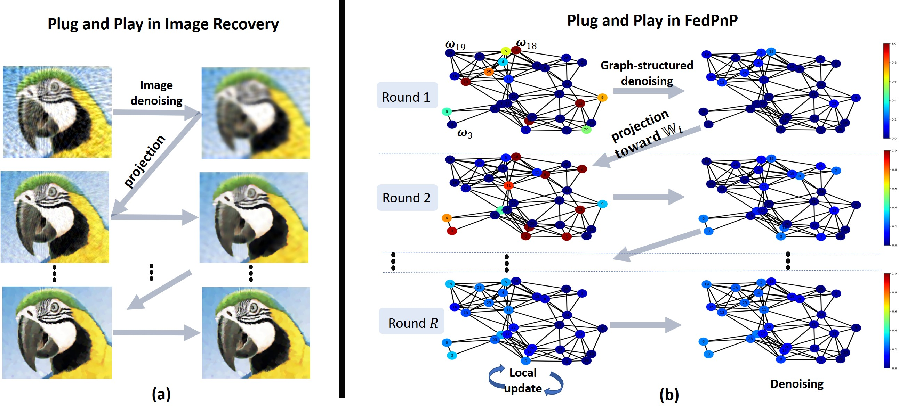
|
FedPnP: Personalized Graph-Structured Federated Learning
Arash Rasti-Meymandi, Ahmad Sajedi, Konstantinos N Plataniotis
Accepted at Pattern Recognition, Elsevier 2024
Paper | Code | Webpage
We introduce a novel personalized federated learning algorithm that leverages the inherent graph-based relationships among clients.
|
|
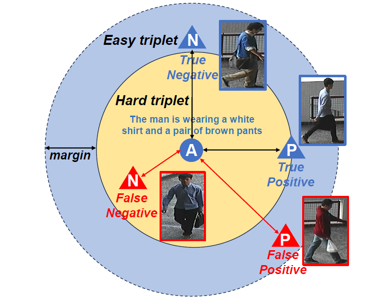
|
Learning with Dual Noisy Labels for Text-to-Image Person Re-identification
Zhaopan Xu, Wangbo Zhao, Sheng Jin, Arash Rasti-Meymandi, et. al.
Submitted to AAAI 25 2025
Paper | Code| Webpage
a method for handling noisy labels in text-to-image person re-identification that outperforms previous approaches by using dual noise detection and triplet loss.
|
|
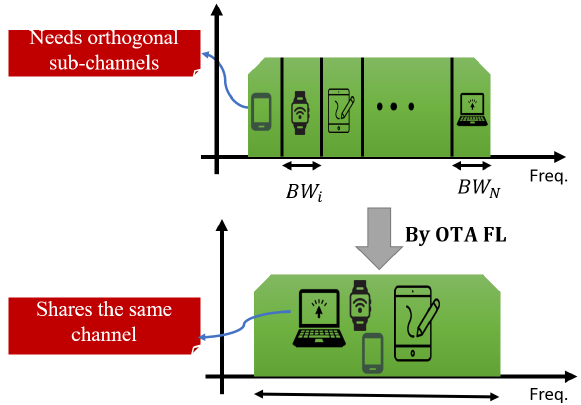
|
PerSOTA-FL: a robust-to-noise personalized over the air federated learning for human activity recognition.
Arash Rasti-Meymandi, Pai Chet Ng, Huan Liu, Yuanhao Yu ,Konstantinos N Plataniotis
Accepted in ICASSP 24 (workshop), 2024
Paper | Code | Webpage
We introduce a novel personalized federated learning algorithm that leverages the inherent graph-based relationships among clients.
|
|
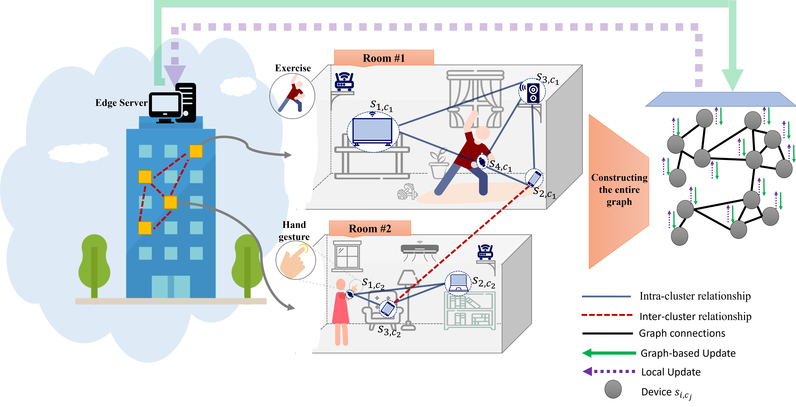
|
Graph Federated Learning for CIoT Devices in Smart Home Applications
Arash Rasti-Meymandi, Seyed Mohammad Sheikholeslami, Jamshid Abouei, Konstantinos N Plataniotis
IEEE Internet of Things Journal, 2022
Paper | Code
We introduce PerSOTA FL (Per-Sonalized Over-the-Air Federated Learning), utilizing QR decomposition for robust OTA-based aggregation, particularly effective in low SNR environments.
|
|
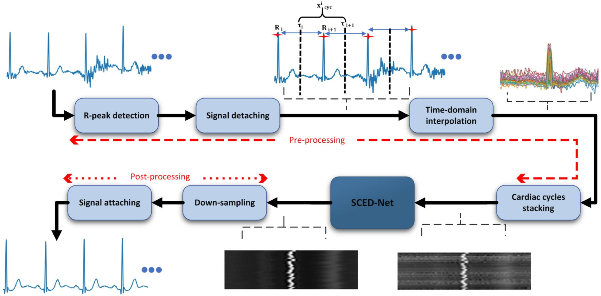
|
A Deep Learning-based Framework For ECG Signal Denoising Based on Stacked Cardiac Cycle Tensor
Arash Rasti-Meymandi and Aboozar Ghaffari
Biomedical Signal Processing and Control, 2022
We introduce a novel deep learning-based approach for denoising Electrocardiogram (ECG) signals by leveraging the periodicity of cardiac cycles through a convolutional neural network (CNN) model equipped with a local/non-local cycle observation (LNC) module.
|
|
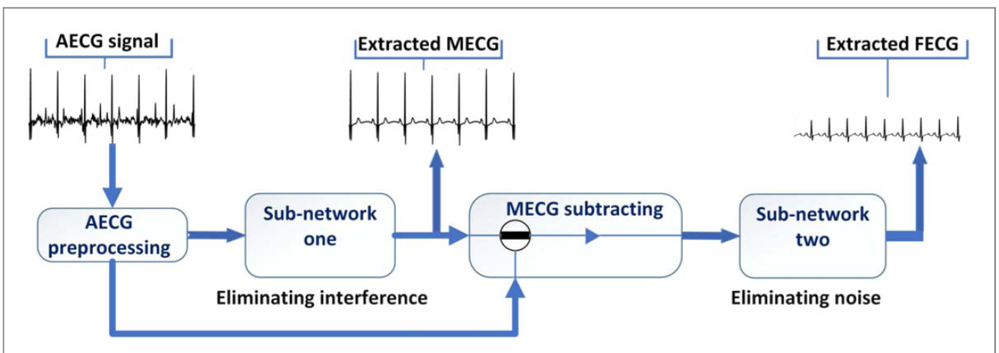
|
AECG-DecompNet: Abdominal ECG Signal Decomposition Through Deep-Learning Model
Arash Rasti-Meymandi and Aboozar Ghaffari
Physiological Measurement, 2021
Physics World Magazine--> interview
We introduce a deep-learning framework, to accurately extract maternal and fetal ECG from single-channel abdominal recordings using two-stage deep model.
|
|
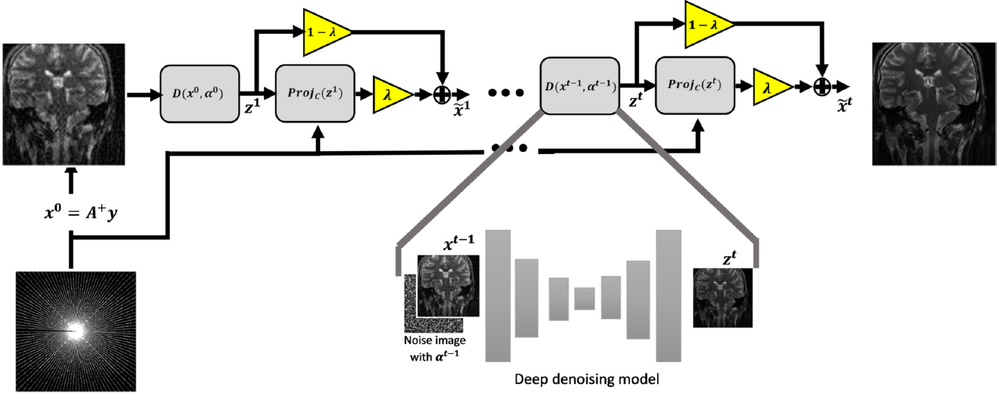
|
Plug and play Augmented HQS: Convergence Analysis and Its Application in MRI Reconstruction
Arash Rasti-Meymandi, Aboozar Ghaffari, Emad Fatemizadeh
Neurocomputing, 2023
Introducing "PnP-AugHQS," an enhanced PnP-HQS technique for sparse recovery, featuring comprehensive convergence analysis and a compact deep CNN denoising regularization for improved performance, adaptable for MRI reconstruction.
|
|
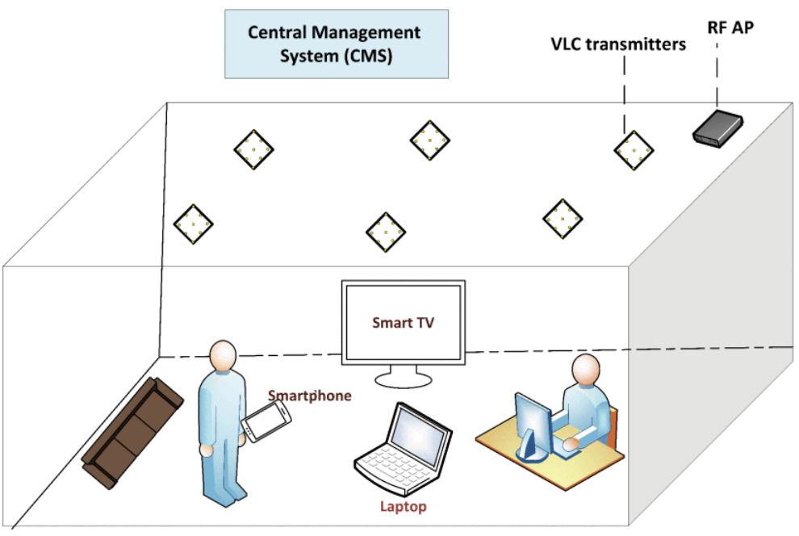
|
Communication-Efficient Federated Learning for Hybrid VLC/RF Indoor Systems
Seyed Mohammad Sheikholeslami, Arash Rasti-Meymandi, Jamshid Abouei,Konstantinos N Plataniotis
IEEE Access, 2022
We tackle device selection and resource allocation in an indoor setting with multiple smart devices using hybrid VLC/RF communication, employing multi-objective optimization and intelligent device prioritization based on local gradients alignment.
|
|
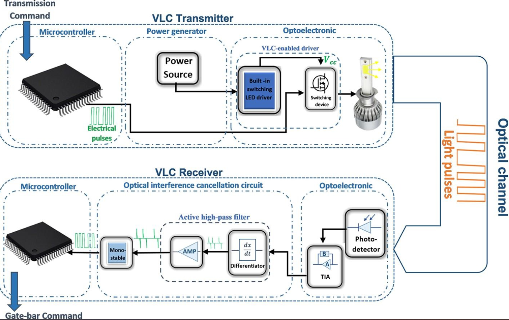
|
Design and Implementation of VLC-based Smart Barrier Gate Systems
Arash Rasti-Meymandi, Ali Madahian, Ali Mirvakili, Zohreh HajiAkhondi-Meybodi, Arash Mohammadi, Jamshid Abouei, Murat Uysal
AEU-International Journal of Electronics and Communications, 2021
Introducing a novel VLC-based Intelligent Transportation System (ITS) utilizing vehicle LED headlamps as remote controllers in a practical scenario.
|
|
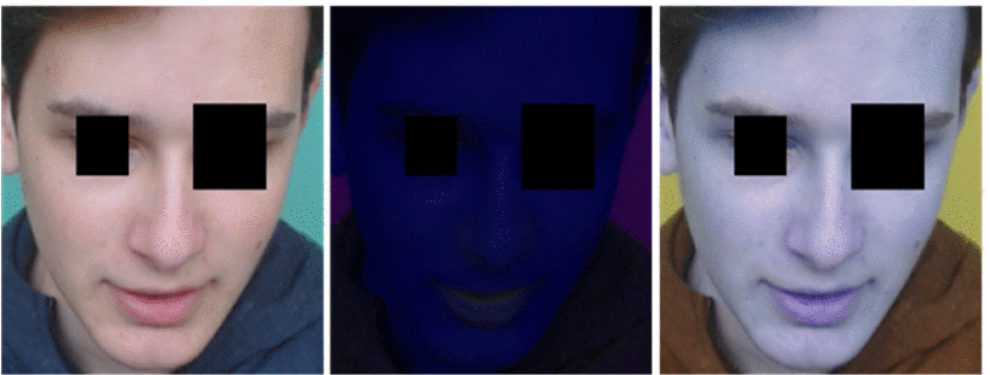
|
A Non-contact Heart Rate Estimation Framework Based on Photoplethysmography Amplitude Variation Elimination and Data Fusion
Arash Rasti-Meymandi, Reza Karimzadeh, Asghar Zarei, Aboozar Ghaffari
2021 28th National and 6th International Iranian Conference on Biomedical Engineering (ICBME), 2021
Introducing a framework for robust contactless heart rate (HR) estimation from facial videos, leveraging diverse color space representations and PPG signal extraction methods. The framework incorporates a novel PPG amplitude variation elimination technique (AVET) to enhance signals, followed by fusion algorithms for improved HR estimation accuracy.
|
|
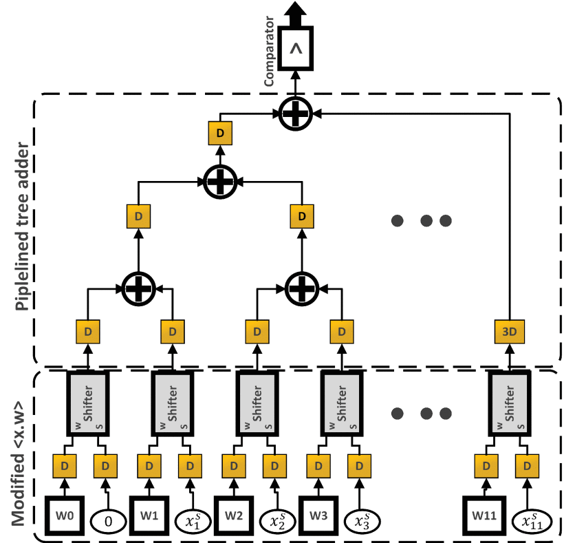
|
Fast Machine Learning-Based Signal Classification in Energy Constrained CRN: FPGA Design and Implementation
Arash Rasti-Meymandi, Jamshid Abouei, Zohreh Hajiakhondi-Meybodi, Arash Mohammadi, Amir Asif
2021 IEEE International Conference on Autonomous Systems (ICAS), 2021
We introduce the Arithmetic Shifter-Based Support Vector Machine (ASB-SVM) classifier, leveraging shift registers for faster signal classification, achieving 98.2% accuracy for green modulated signals in CRNs with significant resource reduction and speed increase.
|
Teaching Assistant • CSCA48H, Introduction to Computer Science II • Summer 2024
Teaching Assistant • CSC311H5, Machine Learning and Data Mining • Winter 2024
Teaching Assistant • CSC420H5, Introduction to Image Understanding • Winter 2024,
Teaching Assistant • CSCC11H3, Introduction to Machine Learning and Data Mining • Fall and Winter 2023
Teaching Assistant • CSC373H5F, Algorithm Design and Analysis • Fall 2023
Teaching Assistant • ECE286, Signal and Systems Signal and Systems • Fall and winter 2017
|
|
Source code from the legendary Jon Barron's website.
|
|
{kind=link}
{kind=link}